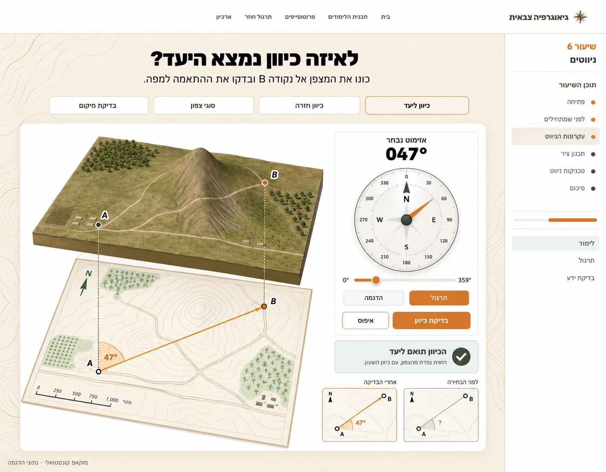

שיעור 6 — ארבע הצעות לעקרונות הניווט
הכיוון המומלץ: לקשר את המצפן, המפה והשטח למשימה ולמשוב — בהמשך לשפה של שיעור 2.
מוקאפים סטטיים לבחירה. הפקדים בתוך התמונות אינם פעילים; המעבר בין ההצעות פעיל.
מה זה מוסיף מול הקיים?

הכיוון המומלץ: לקשר את המצפן, המפה והשטח למשימה ולמשוב — בהמשך לשפה של שיעור 2.
מוקאפים סטטיים לבחירה. הפקדים בתוך התמונות אינם פעילים; המעבר בין ההצעות פעיל.
מה זה מוסיף מול הקיים?
